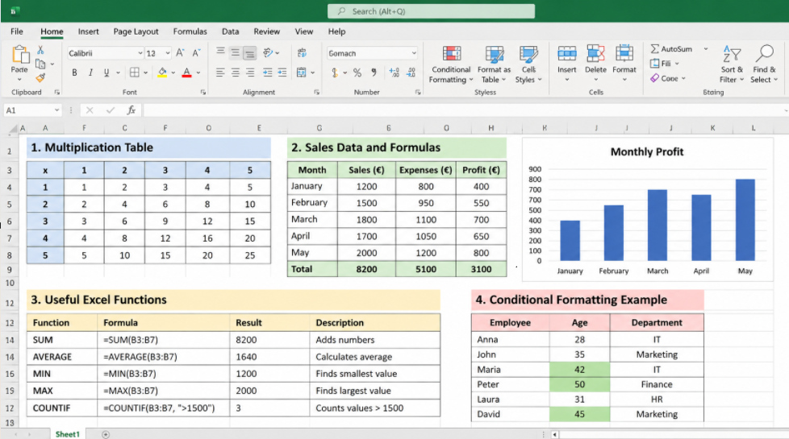

This page contains useful Excel tips and techniques that I learned during the course.
Excel can perform mathematical operations using formulas.
| Function | Purpose |
|---|---|
| SUM | Adds numbers together |
| AVERAGE | Calculates the average value |
| MIN | Finds the smallest value |
| MAX | Finds the largest value |
| COUNTIF | Counts cells that meet a condition |
The dollar sign ($) is used to lock a row or column in a formula.
Absolute references are useful when copying formulas in multiplication tables and calculators.
Conditional formatting automatically changes the appearance of cells based on rules.
For example, I can highlight employees older than 40 in green.
Excel charts help visualize data. Bar charts are useful for comparing values, while line charts show changes and trends.
XLOOKUP searches for a value in one range and returns a related value from another range.
Example formula:
=XLOOKUP(A2,D2:D10,E2:E10)
During this course, I practiced creating formulas, using functions, formatting tables, calculating values and making charts.
I learned that Excel is useful for organizing information and analyzing data efficiently.
This screenshot shows an example of my Excel work. I used formulas and functions to calculate values and organize data in a table.

I practiced multiplication tables, company income and expense calculations, loan calculations and employee data analysis.
I will add screenshots of my Excel exercises here to demonstrate these skills.